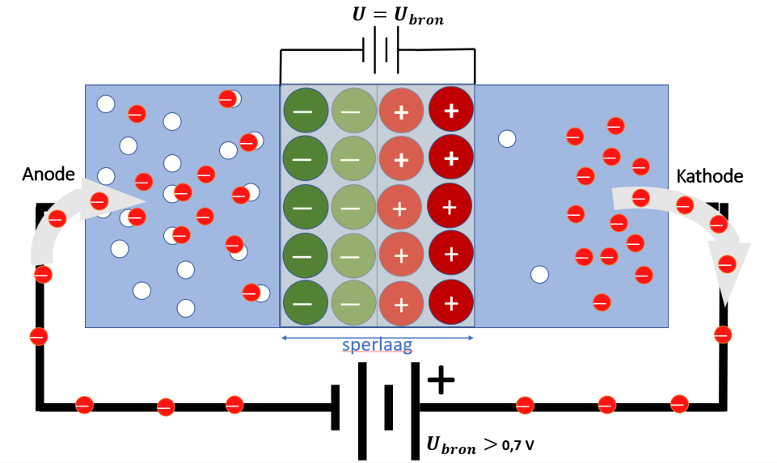
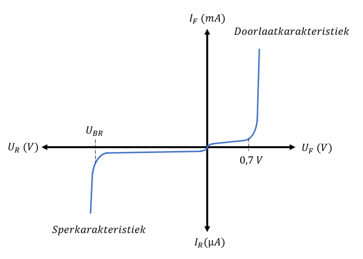
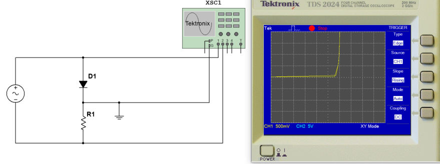
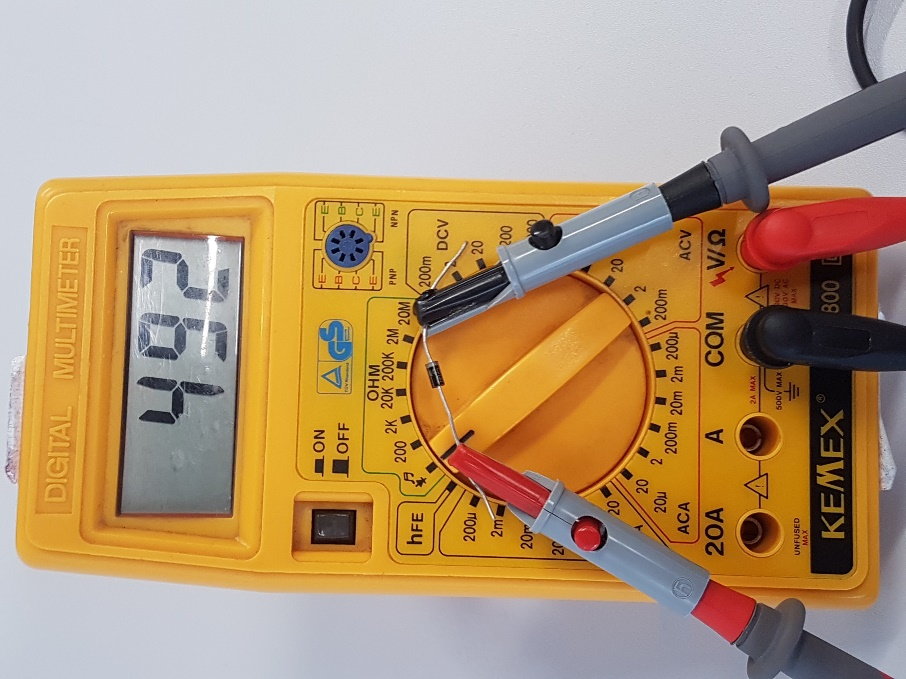
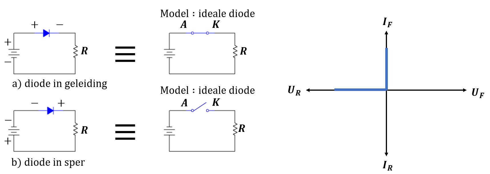
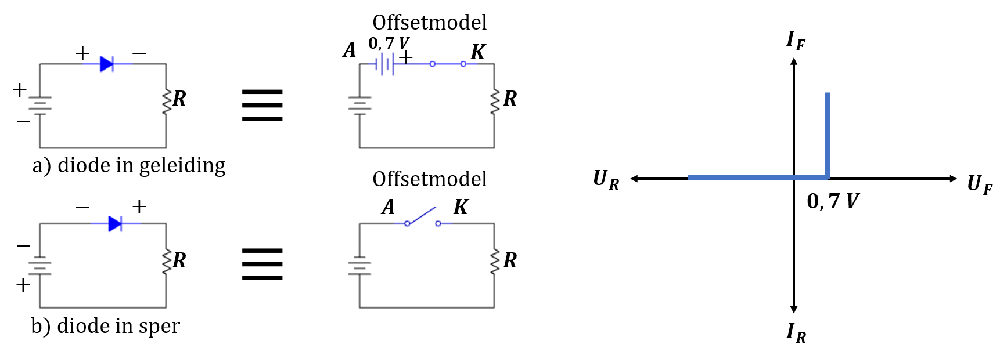
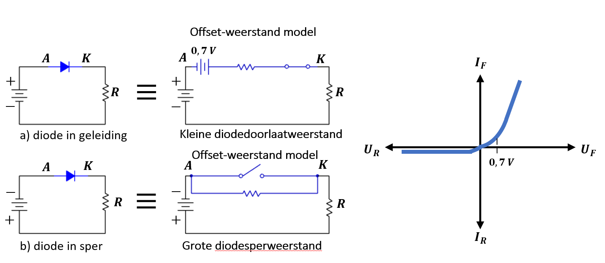

De halfgeleiderdiode
Een -junctie vormt een halfgeleiderdiode. Er vloeit geen stroom door de junctie bij evenwicht. Het voornaamste nut van een diode is de mogelijkheid om de stroom in één richting te laten vloeien. Of er stroom vloeit is afhankelijk van de instelling. Er zijn twee basisinstellingen voor de diode: een instelling waarbij de diode in geleiding staat en een instelling waarbij de diode in sper staat. Elk van deze genoemde basisinstellingen wordt gecreëerd via het aanleggen van een externe spanningsbron in de juiste richting over de -junctie van de diode.
De diodekarakteristiek is een grafische voorstelling van de stroom-spanningsrelatie van de diode. De lijn van de karakteristiek geeft het weerstandsverloop van de diode weer. Drie diodemodellen worden eveneens besproken. Ieder model geeft een ander soort benadering van een werkelijke diode zodat je één van deze modellen kan kiezen voor analyse van een bepaalde toepassing. In sommige gevallen is een eenvoudige benadering reeds voldoende om de werking van de schakeling te verklaren. In andere gevallen is een meer geavanceerd model noodzakelijk.
Wat is belangrijk?
Je beschrijft hoe je een diode in doorlaat instelt.
Je beschrijft hoe je een diode in sper instelt.
Je definieert het doorslaan van een diode (avalanche breakdown)
Je verklaart het verloop van een diodekarakteristiek.
Je verklaart hoe je een diodekarakteristiek zichtbaar kan maken op een oscilloscoop.
Je beschrijft de drie modellen die gebruikt worden om een diode in een schakeling voor te stellen.
Instellen van een halfgeleiderdiode
Diode in geleiding
Forward bias, of de diode in geleiding instellen, is de conditie die toelaat dat er stroom vloeit door de -junctie. De term bias refereert naar een vaste gelijkspanning waarmee de werkingsvoorwaarde van de halfgeleidercomponent wordt vastgelegd. Aan de -junctie zijn twee aansluitdraden aangebracht. De aansluiting langs de -zijde wordt de anode genoemd en de aansluiting langs de -zijde de kathode. Dioden (of -juncties) staan in doorlaat als de anode positiever is dan de kathode. Dit wil zeggen dat als de anode positiever is dan de kathode bij silicium of als de anode positiever is dan de kathode bij germanium, de diode (-junctie) in geleiding staat.

Figuur 2-7 : Diode (-junctie) in geleiding
Het werkingsprincipe is weergegeven in figuur 2-7. Door het aansluiten van de voedingsklemmen wordt langs de kathode (-zijde) elektronen in het kristal gestuurd en langs de anode (-zijde) worden er elektronen uit de het kristal onttrokken door de positieve klem van de voeding. Zolang de aangelegde spanning niet hoger is dan de diffusiespanning (), kunnen er praktisch geen elektronen door de diffusielaag. Van zodra de aangelegde bronspanning hoger is dan de die over de diffusielaag staat, hebben de vrije elektronen in het -gebied voldoende energie om door deze diffusielaag te vloeien. Van dan af vloeit er in de geleidingsband van het -kristal een stroom van meerderheidsladingsdragers (vrije elektronen) door de diffusielaag naar het -gebied. Eens de vrije elektronen in het -gebied aangekomen zijn, recombineren ze met de vele gaten die daar aanwezig zijn. Door in het -gebied te recombineren met gaten verlaten de vrije elektronen de geleidingsband en komen ze in de valentieband terecht. Ze worden dus valentie-elektronen. In de valentieband bewegen deze elektronen van gat tot gat richting positieve klem van de voeding. Deze beweging van valentie-elektronen veroorzaakt een beweging van gaten (meerderheidsladingsdragers in het -gebied) in de tegenovergestelde richting.
Diode in sper
Reverse bias of de dioden in sper aansluiten is de conditie die verhindert dat er stroom zou vloeien door de -junctie. Figuur 2-8 toont wat er gebeurt als de diode in sper wordt aangesloten.

Figuur 2-8 : Diode (-junctie) in sper
De diode wordt in sper aangesloten door de negatieve klem van de spanningsbron aan de anode aan te sluiten en de positieve klem aan de kathode. De negatieve klem van de spanningsbron trekt de gaten aan in het -gebied, terwijl de positieve klem de elektronen in het -gebied aantrekt. Hierdoor blijft er in het gebied rond de N-overgang enkel nog ionen over en (praktisch) geen vrije ladingsdragers. Dit gebied wordt de sperlaag genoemd. Door het feit dat er rond de -overgang meer ionen bevinden is de sperlaag groter dan de diffusielaag. De elektrische veldsterkte tussen het - en -kristal neemt hierdoor toe. Zolang de spanning over de sperlaag kleiner is dan de aangelegde spanning van de spanningsbron, blijver er elektronen en gaten weggetrokken worden uit de junctie. Het gevolg hiervan is dat de sperlaag nog groter wordt. Van zodra de spanning over de sperlaag even groot is als de aangelegde spanning van de spanningsbron stopt de elektronenstroom en gatenstroom. Er is dan geen potentiaalverschil meer tussen aangelegde spanningsbron en sperspanning over de sperlaag van de diode zodat er geen stroom meer kan vloeien. Doordat er geen stroom meer kan vloeiën kunnen er ook geen ladingsdragers meer weggetrokken worden uit het grensgebied waardoor de sperlaag niet meer breder wordt.
Peak Inverse Voltage (PIV)
Als een diode in sper is geschakeld moet deze bestand zijn tegen de maximaal aangelegde sperspanning. Als de diode hiertoe niet bestand is, zal deze doorslaan. De maximale inverse spanning over een diode wordt aangegeven door (Peak Inverse Voltage). De hoeveelheid vereiste is afhankelijk van de toespassing. Voor veel toepassingen moet hoger zijn dan de inverse spanning (sperspanning) over de diode.
Doorslaan van een diode in sper
Wanneer de sperspanning blijft stijgen dan zal op een gegeven moment toch noemenswaardige stroom door de diode beginnen te vloeien. Door de stijgende sperspanning verkrijgen de vrije elektronen als maar meer energie van de uitwendig aangelegde spanningsbron. Hierdoor gaan ze sneller bewegen. Wanneer zo’n vrij elektron met dergelijke extra energie in de buurt van een atoom komt is er grote kans dat deze op een valentie-elektron botst. Hierdoor wordt dit valentie-electron losgeslagen uit de covalente binding en komt het in de geleidingsband terecht. Dit elektron gaat op zijn beurt bewegen richting positieve klem van de spanningsbron en zal onderweg eveneens botsen op andere atomen, waardoor weer nieuwe vrije elektronen ontstaan enz … Dit effect wordt het avalanche effect genoemd. Het gevolg hiervan is dat de stroom snel toeneemt en er meer warmte wordt geproduceerd in de diode. Op een gegeven moment wordt de warmte binnenin de diode zodanig hoog dat er in het binnenste van de diode beschadiging optreedt. Veel dioden kunnen niet tegen deze doorslag en zullen stuk gaan als dit effect zich voordoet. Enkel een bijzonderen diode, die zenerdiode wordt genoemd, is zodanig opgebouwd dat ze kan functioneren in een beperkt gedeelte van het doorslaggebied.
Kenmerken van een diode
Diodesymbool
Figuur 2-9 toont het standaard schemasymbool van een diode voor algemene doeleinden. De twee aansluitdraden van de dioden zijn, zoals rees is vermeld, de anode en de kathode. De pijl in het symbool wijst steeds de kathode aan.

Figuur 2-9: schemasymbool van een diode
Figur 2-10 (a) toont een diode in doorlaat geschakeld via een spanningsbron en een weerstand die de stroom begrensd. De anode is positiever dan de kathode waardoor er een relatief grote stroom door de schakeling vloeit. De spanning die over een diode in doorlaat staat is ongeveer gelijk aan de diffusiespanning . Voor een siliciumdiode wordt over het algemeen aangenomen dat deze spanningsval gelijk is aan . De spanning over de weerstand is dan gelijk aan de bronspanning waarvan de doorlaatspanning over de diode moet worden afgetrokken. In formulevorm:

Figuur 2-10: voorbeeld van een diode in doorlaat en in sper geschakeld
In figuur 2-10 (b) is een voorbeeld gegeven van een diode die in sper is geschakeld. De anode is in dit geval negatief ten opzichte van de kathode. Hierdoor zal de diode geen elektrische stroom geleiden. In de praktijk zal er enkel nog een zeer kleine lekstroom vloeien omwille van de breking van covalente bindingen in het kristal ten gevolge van de aanwezige warmte-energie (bv. kamertemperatuur). Doordat er zo goed als geen stroom door de diode vloeit staat praktisch de volledige spanning van de spanningsbron over de diode. Over de weerstand staat nu zo goed als geen spanning en als de diode ideaal beschouwd mag worden is de spanning over de weerstand gelijk aan nul. In formulevorm:
Verloop van de diodekaraktersitiek
Het rechtsboven kwadrant van de curve in figuuur 2-11 toont de doorlaatkarakteristiek van een diode. Beneden de diffusiespanning () vloeit er nagenoeg geen stroom in doorlaat. De stroom in doorlaat bij een diode wordt aangegeven als afkomstig van “Forward Current”. Op analoge wijze wordt de spanning in doorlaat aangegeven als . Voor germanium is de diffusiespanning ongeveer . Dit betekent dat beneden de er bij germanium nagenoeg geen stroom vloeit.

Figuur 2-11: de diodekarakteristiek
Van zodra de waarde van de diffusiespanning bereikt, begint de stroom sterk te stijgen en wordt deze beperkt door de serieweerstand. Als de aangelegde spanning wordt verhoogd blijft de spanning over de in doorlaat ingestelde diode ongeveer voor sililicium, De diffusiespanning wordt om die reden ook de spanningsval over de diode in doorlaat genoemd.
Het kwadrant links beneden in de karakteristiek van de diode van figuur 2-11 toont de sperkarakteristiek. De diode is hier in sper aangesloten. Als de sperspanning, ook genoemd of “Reverse Voltage”, negatiever wordt blijft de stroom ongeveer gelijk aan nul (orde tot dat de doorslagspanning (Breakdown voltage) wordt bereikt. Als deze doorslagspanning wordt bereikt, vloeit er een grote stroom door de sperrende diode. Deze grote stroom kan, als ze niet wordt begrensd, de diode vernietigen. Meestal is de doorslagspanning groter dan . Bij de meeste toepassingen van gewone dioden wordt een instelling in het breakdown-gebied niet gemaakt. De reden hiervoor is dat eens het doorslaggebied bereikt is bij de diode de kans zeer groot is dat de avalanche breakdown wordt bereikt met als gevolg dat de diode stuk gaat.
De diodekarakteristiek kan je weergeven op een oscilloscoop op de manier zoals in figuur 2-12 is weergegeven.

Figuur 2-12: Weergeven van een diokarakteristiek op een oscilloscoop
De wisselspanningsbron heeft bij voorkeur een zaagtandvormige golfvorm. Je kan de karakteristiek ook met een sinusvorm zichtbaar maken. Kanaal 1 laat de spanningsval over de diode zien en kanaal 2 de spanningsval over de weerstand. De spanningsval over de weerstand is evenredig met de stroom door deze weerstand (wet van Ohm). Kanaal 2 moet wel geïnverteerd worden vermits de spanning van kanaal 2 verticaal zal weergegeven worden en de spanning van kanaal 1 horizontaal. Dit kan bekomen worden door de oscilloscoop in te stellen in XY-mode in plaats van YT. De massa van de signaalgenerator hoeft niet dezelfde te zijn als deze van de oscilloscoop als één van de toestellen (generator of oscilloscoop) niet geaard is. Ander is er een kortsluiting tussen de massa’s van de oscilloscoop en deze van de generator. Indien beide toestellen geaard zijn maakt men best gebruikt van een niet geaard stopcontact voor één van de toestellen.
Dioden uitmeten met een Ohmmeter of multimeter
De inwendige batterij van bijna alle Ohmmeters is in staat om een diode in doorlaat of in sper te plaatsen. Dit laat toe om snel na te gaan of een diode nog bruikbaar is of niet. Veel digitale multimeters hebben een diode testpositie die de diode in doorlaat zal aangeven en een overbelasting zal weergeven als de diode in sper staat. Indien deze voorziening niet aanwezig is kan je de Ohmmeter is een bereik plaatsen waar je een honderdtal Ohm kan meten. Plaats de meterkabels zodanig dat de diode in doorlaat staat en vervolgens keer de je de kabels om. Het gevolg is dat de meter een lagere weerstand meet als de diode in doorlaat staat. De weerstand in sper geeft een factor of meer verschil met de weerstand in doorlaat. De exacte weerstandswaarde is afhankelijk van het type diode en batterijspanning van de Ohmmeter.
|  |  |
|---|---|
 |
 |
| Diode in doorlaat levert een lage weerstandswaarde op (in dit voorbeeld is de doorlaatweerstand gelijk aan Merk op dat deze waarde vooral afhankelijk is van de batterijspanning van de meter) | Diode in sper levert een hoge weerstandwaarde op (in dit voorbeeld geeft de meter aan dat de waarde hoger is dan het ingestelde bereik om te meten) |
Figuur 2-13: Meting met multimeter ter bepaling of een diode al dan niet stuk is
Diode model (equivalent schema van een diode)
Het ideale model
In het ideale model wordt de diode aanzien als een schakelaar. Een diode in doorlaat komt hierin overeen met een gesloten schakelaar en een diode in sper met een open schakelaar. Figuur 2-13 geeft deze relatie tussen de diode en een schakelaar weer.

Figuur 2-13 : Ideaal model van een diode (diode als schakelaar)
In het ideale model zijn de voorwaartse spanningsval over de diode en de stroom in sper steeds gelijk aan nul. Het ideaal model houdt geen rekening met de diffusiespanning, de interne weerstand van de dioden en andere effecten. Als de instelspanning (bronspanning) veel hoger is dan de diffusiespanning van de diode is dit model in (veel) toepassingen bruikbaar.
Het offset model
Het offset model bestaat uit het ideale model uitgebreid met de diffusiespanning. Deze wordt voorgesteld als een kleine spanningsbron van (silicium) in serie met de schakelaar. De positieve klem van de spanningsbron is verbonden met de anode. Hierdoor zal de instelspanning of bronspanning deze eerst moeten overwinnen vooraleer de diode in geleiding komt.

Figuur 2-14 : Offset model van een diode
Als de diode in sper wordt ingesteld, wordt deze voorgesteld als een ideale schakelaar. Dit is net zo als bij het ideale model. De reden hiervoor is dat de diffusiespanning geen effect heeft op de instelling in sper. Beide bronnen staan dan in serie met dezelfde polariteit. De karakteristiek van het offset model is eveneens weergegeven in figuur 2-14.
Het offset-weerstand model
Figuur 2-15 toont het offset-weerstand model van een diode in geleiding. De weerstand in doorlaat is in principe een AC-weerstand. Afhankelijk van de spanningswaarde over de diode varieert deze weerstand. Is de voorwaartse spanningsval kleiner dan de diffusiespanning dan is deze weerstandswaarde relatief hoog. Van zodra de diffusiespanning bereikt wordt daal deze weerstanswaarde sterk. Eens de spanning lichtjes hoger wordt dan de diffusiespannig kan de weerstandsverandering voorgesteld worden als een quasi lineaire benadering.

Figuur 2-15: Offset-weerstand model van een diode
In figuur 2-15 is ook te zien dat de sperweerstand inloed heeft op het equivalent schema van een diode. Deze weerstand staat parallel over de open schakelaar. Het gevolg van deze sperweerstand is dat er een heel kleine sperstroom door de schakeling vloeit als de diode in sper staat. De karakteristiek van het offset-weerstand model is eveneens in figuur 2-15 weergegeven.
Er zijn nog andere effecten op kleinere schaal zoals de junctiecapaciteit. De invloed van de junctiecapaciteit is niet in de besproken modellen inbegrepen. Echter op hoog-frequent dien je wel rekening te houden met deze junctiecapaiteit. Om de hoog-frequentanalyse aangaande de diode uit te voeren wordt meestal gebruik gemaakt van een computermodel.
Test jezelf aangaande de halfgeleiderdiode
Op welke twee manieren kan je een diode instellen?
Welke diode-instelling veroorzaakt een stroom van meerderheidsladingsdragers?
Welke diode-instelling zorgt voor een verbreding van de diffusielaag?
Wat wordt bedoeld met avalanche breakdown?
Welk zijn de twee voorwaarden waardoor een diode kan geleiden?
Welk deel van de diodekarakterstiek maakt geen deel uit van de normale werking van een diode?
Welk model is het eenvoudigst om te gebruiken als equivalent schema van een diode?
Welke twee benaderingen zijn opgenomen in het offset-weerstand model van een diode?